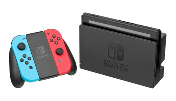
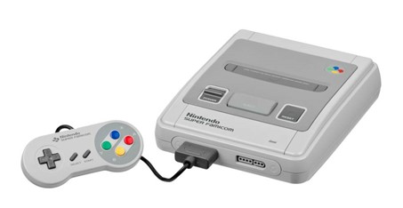

 Aquí se explicará el videojuego de Mario, como se creo el juego entre más cosas.
Nintendo Company, Ltd. es una empresa de entretenimiento dedicada a la investigación y desarrollo, producción y distribución de software y hardware de videojuegos, y juegos de cartas, con sede en Kioto, Japón. La concepción de la siguiente consola de sobremesa de Nintendo se remonta a 2001, aunque las labores de diseño comenzaron en 2003 tomando como inspiración la portátil DS. Finalmente, la Wii estuvo disponible a partir del 19 de noviembre de 2006 con un total de 33 juegos compatibles desde su lanzamiento. Con este producto, Nintendo buscó alcanzar una demografía más amplia que sus competidores de la séptima generación con la intención de abarcar también al sector de los «no consumidores
 Antes de que crearan a Mario, nintendo era una empresa pequeña, y creaba consolas, como la que podemos ver al lado izquierdo, pero la gente no empezaba a comprar sus consolas porque en esos tiempos empezo otra empresa que le hacía competencia a nintendo, y su mascota era un erizo azul llamado Sonic, y a los niños les gustaba mas sonic que los personajes que tenia nintendo, entonces ahi es donde Nintendo decidio crear a Mario y decidio mejorarlo, y Nintendo logro triunfar hasta el día de hoy. Las pérdidas financieras ocasionadas por las ventas de la Wii U y la intención de Sony de adaptar a partir de 2014 sus videojuegos a otros sistemas de entretenimiento, tales como las televisiones inteligentes, motivó a Nintendo a replantear su principal estrategia centrada en la producción de videoconsolas y juegos virtuales.